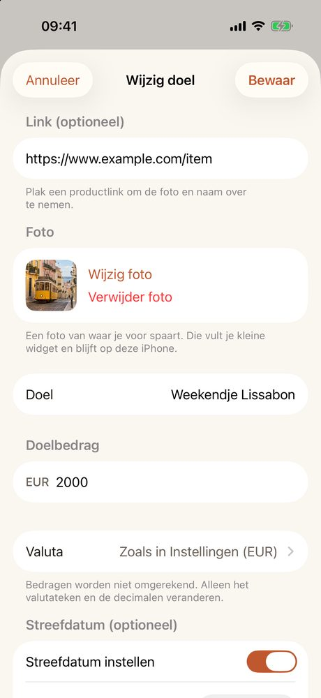

Zo zet je een spaardoel op het beginscherm van je iPhone
Sparen voor iets gaat makkelijker als je het ziet. Een widget zet de balk — hoeveel je hebt gespaard en hoeveel er nog over is — waar je vaak per dag kijkt, en laat je met één tik geld toevoegen.
Zo stel je het in met Savebar. Eén doel en de kleine widget zijn gratis.
1. Maak een doel
Open Savebar en tik op +.
Kies een naam en een Doelbedrag.
Optioneel: zet “Streefdatum instellen” aan om de resterende dagen te zien en hoeveel je per dag moet sparen.
Optioneel: plak een productlink bij “Link”. De foto en naam worden van de pagina overgenomen.
2. Kies het bedrag voor de widgetknop
Bij “Bedragen in de widget”: vul hier het bedrag in dat je meestal opzijzet. De knop in de widget voegt het met één tik toe, zonder de app te openen.

3. Zet de widget op je beginscherm
Houd je vinger op een leeg deel van het beginscherm tot de apps gaan wiebelen.
Tik op Wijzig (of +) in de bovenhoek en zoek naar “Savebar”.
Kies het formaat Klein en tik op Voeg widget toe.
Tik elke keer dat je geld opzijzet op de bedragknop in de widget. De balk en het percentage bewegen meteen mee.
De grotere widget op deze afbeelding, met meerdere doelen, hoort bij Savebar Pro.
Wil je meer?
Savebar Pro is een eenmalige aankoop, geen abonnement:
Onbeperkt doelen
Middelgrote en grote widgets met meerdere doelen, en tot twee bedragknoppen per doel
Widgets voor het toegangsscherm
Een Apple Watch-app met dezelfde bedragknoppen
Vragen
Maakt de app verbinding met mijn bank?Nee. Je voert de bedragen zelf in, dus geen inlog en niets om te koppelen.
Hoeveel doelen kan ik gratis maken?Eén, met de kleine widget voor het beginscherm. Savebar Pro, een eenmalige aankoop, geeft onbeperkt doelen, middelgrote en grote widgets met meerdere doelen, widgets voor het toegangsscherm en een Apple Watch-app.
Kan ik een bedrag toevoegen dat niet op de knop staat?Ja. Open het doel in de app en tik op “+ Toevoegen” om elk bedrag in te voeren.
Hoe kies ik welk doel de widget toont?Houd je vinger op de widget, tik op “Wijzig widget” en kies het doel.